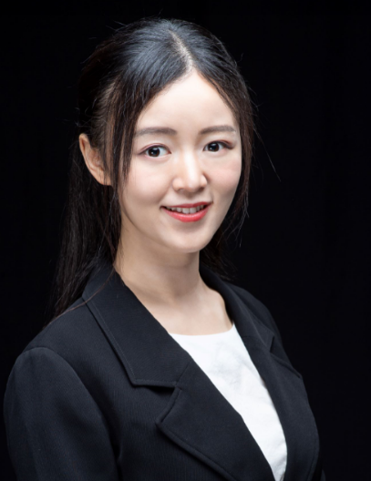
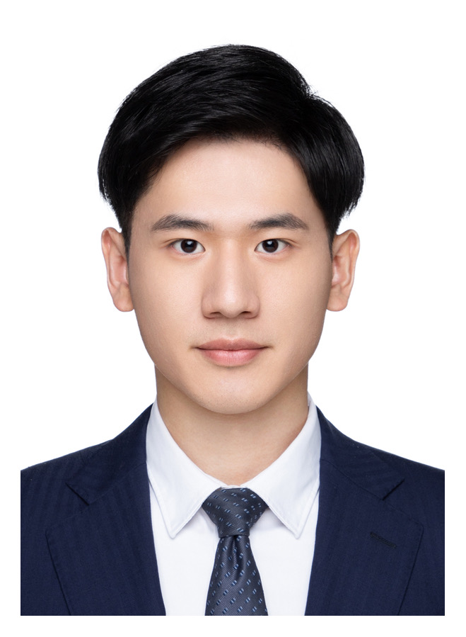
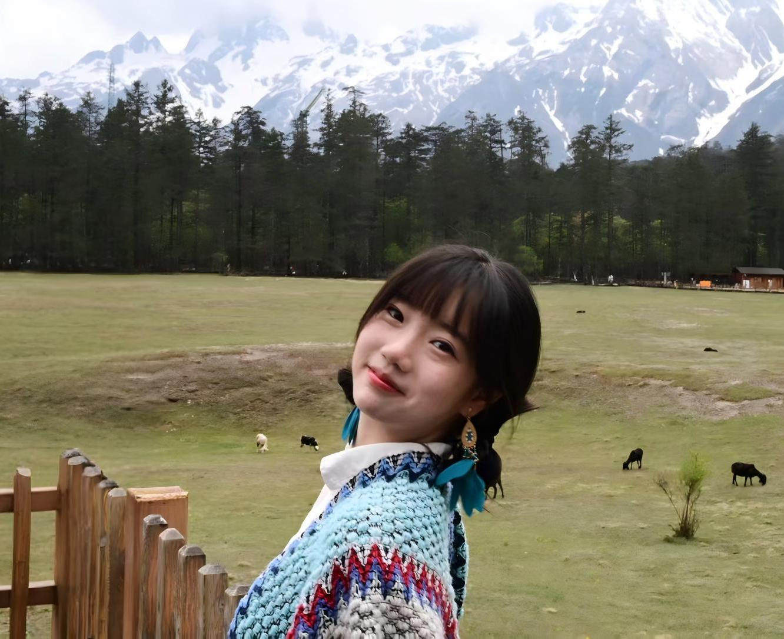

团队成员
实验室主任

唐晓莹 教授
香港中文大学（深圳）理工学院助理教授，校长青年学者，深圳河套学院客座教授
T-lab实验室主任
IEEE物联网期刊（IEEE IOTJ）副编辑
IEEE移动计算汇刊（IEEE TMC）副编辑
IEEE电力与能源学会电动汽车技术委员会委员
深圳市人工智能学会理事
广东省计算机学会移动与边缘计算专委会常务委员
获IEEE通信协会智能电网旗舰会议（IEEE SmartGridComm）最佳论文奖
获IEEE/ACM ASE 2023杰出论文奖
获IEEE SmartGridComm 2024年度最佳论文奖
获IEEE ICCT 2024最佳海报报告奖
入选2024腾讯犀牛鸟专项研究计划
邮箱: tangxiaoying@cuhk.edu.cn
团队成员
在读成员
张纪伟
博士研究生
研究方向：电动车经济学
杨岳铭
博士研究生
研究方向：电动车充电网络优化

朱炅昊
博士研究生
研究方向：智能电网优化

刘皓月
博士研究生
研究方向：多模态大模型与提示优化

尹祯帅
博士研究生
研究方向：大语言模型，GUI Agent
卢佳豪
硕士研究生
研究方向：联邦学习和大语言模型

师睿禾
硕士研究生
研究方向：电动汽车充电网络优化

马孝宇
硕士研究生
研究方向：大模型

罗中泽
硕士研究生
研究方向：大模型

张晨
硕士研究生
研究方向：电动车经济学
毕业成员

姚瑶
硕士
研究方向：生成式人工智能，联邦学习

刘婕
博士
研究方向：人工智能算法与车网互动交叉领域

杨晨
硕士
研究方向：充电站定价调度，强化学习

燕峘宇
博士
研究方向：电动汽车充电网络，博弈论，拍卖理论，优化

陈阳
硕士
研究方向：大模型训练，联邦学习
王鑫鹏
硕士
研究方向：可信AI，视频生成